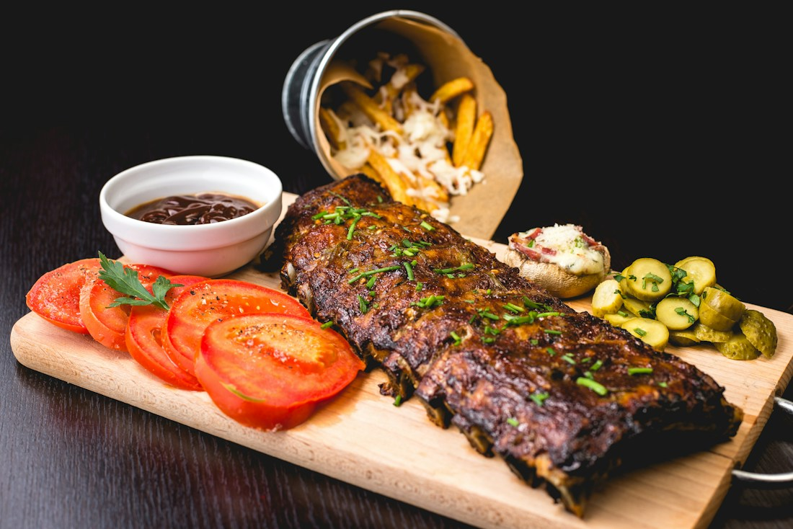
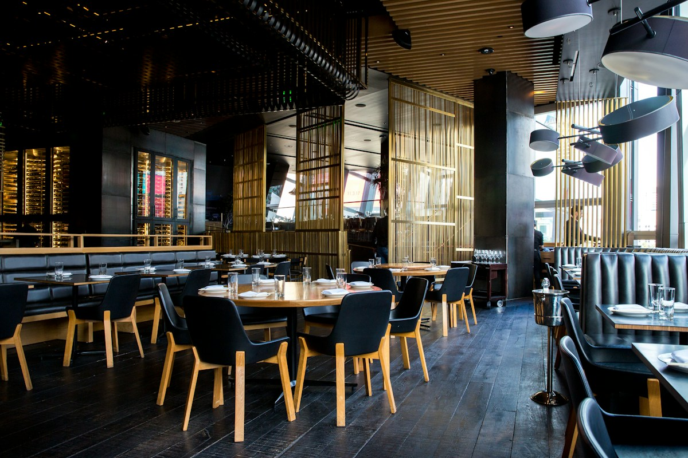

Croquetas artesanales de cecina · 4 uds.
Cremosas por dentro, crujientes por fuera, con emulsión de pimiento asado.
Madrid Cocina de producto Fuego de encina
Reservas +34 912 345 678En D'Vino & Brasa, el respeto por el producto local y la magia de las brasas se encuentran alrededor de la mesa.

EL FUEGO COMO ORIGEN D&B — MADRIDEn el corazón de la ciudad, te invitamos a desconectar y disfrutar de una cocina honesta. Seleccionamos los mejores cortes de carne, pescados frescos del día y verduras de temporada.
Los cocinamos con madera de encina, sin prisas y respetando el carácter de cada ingrediente. Cada mesa es una celebración del buen comer y del buen vivir.
Una cocina hecha con intenciónVinos elegidos para acompañar el producto, realzar la brasa y alargar la sobremesa.
Fruta negra madura y notas tostadas de madera. Un gran compañero para carnes rojas.
Elegante y equilibrado, con un final largo. Ideal con quesos y guisos.
Notas cítricas y florales, con acidez vibrante. El aliado del pescado y el pulpo.
Aromático y refrescante, perfecto como bienvenida o con entrantes ligeros.
Burbuja fina y persistente. Para limpiar el paladar o celebrar algo especial.
Guarda la dirección y ven a disfrutar. Nuestro equipo estará encantado de recibirte.

Reserva tu mesa por teléfono. Te esperamos en D'Vino & Brasa.
Reservar una mesa +34 912 345 678